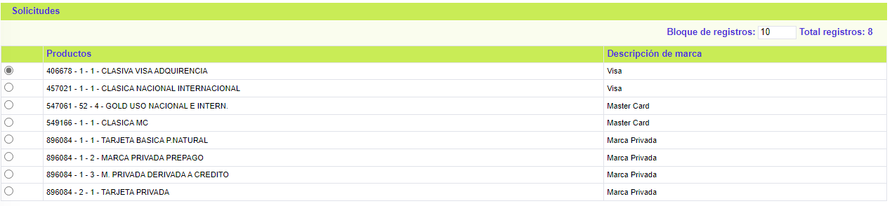
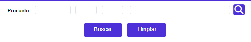
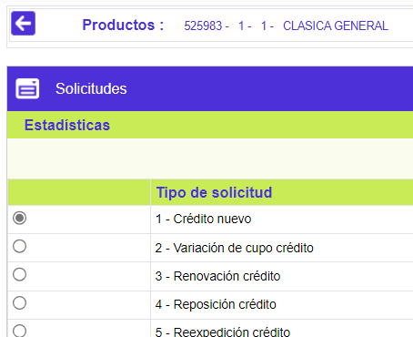
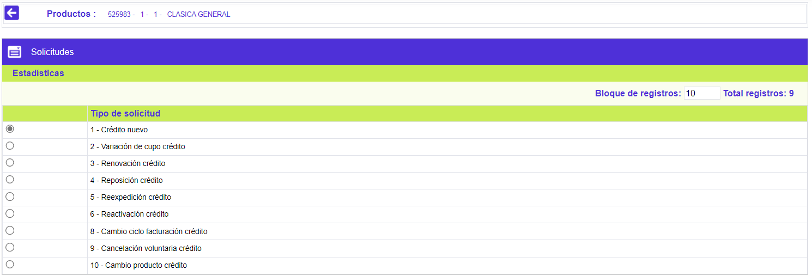

Consultar estadísticas
Una vez ejecutado el proceso de Actualización estadísticas de las solicitudes (la cual se encuentra en el presente módulo), se alimenta la información correspondiente a la cantidad de solicitudes realizadas por franquicia, la clase de solicitudes y los tiempos promedio de permanencia en cada etapa surtida por las solicitudes.
El formulario cuenta con un filtro de búsqueda y la opción Solicitudes en la parte superior.

Filtro: Se pueden realizar consultas a través de las siguientes opciones:

Producto |
Campo que contiene el “nombre” del producto o descriptivo que los identifica, de acuerdo con lo parametrizado en la opción Productos, para cuyas tarjetas asociadas se han efectuado las distintas solicitudes. |
Solicitudes: Muestra la información asociada a cada solicitud de acuerdo con el tipo de producto.

Tipo solicitud |
Campo que despliega las diferentes solicitudes asociadas a cada producto por medio de la opción arámetros. |

Etapa |
Campos que muestran las diferentes etapas que debe surtir cada una de las solicitudes de acuerdo con lo definido en la opción Parámetros. Las estadísticas desplegadas se corresponden con cada una de las etapas que deben surtir las distintas solicitudes. |
Número de solicitudes |
Cantidad de solicitudes que pasaron por cada etapa. |
Duración promedio |
Determina el promedio de días que permaneció cada tipo de solicitud en determinada etapa. |
Fecha de la estadística |
Corresponde a la última fecha en la cual se ejecutó el proceso de actualización de estadísticas mencionado anteriormente. |